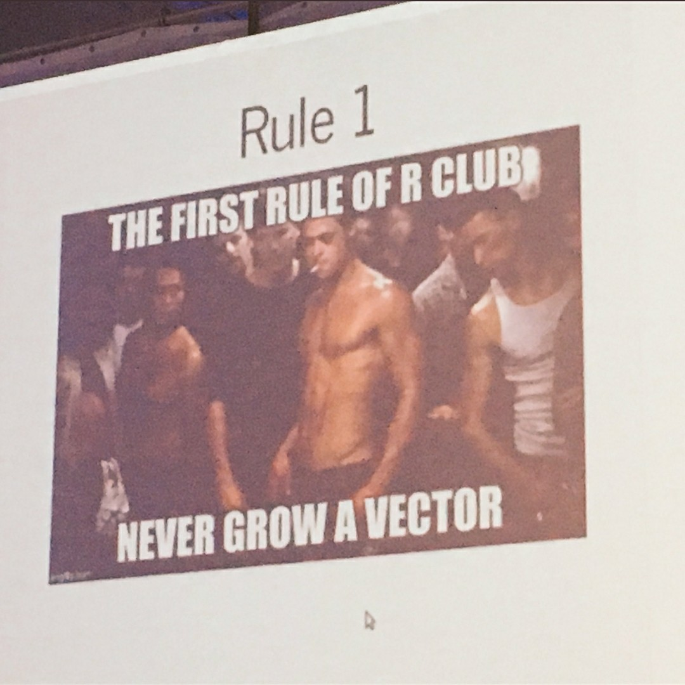

5 Programando com dados
Por quê programar?
- Evitar repetições desnecessárias de análises ou cálculos que são repetidos com frequência.
- Documentar as etapas que você realizou para chegar a um resultado.
- Fácil recuperação e modificação de programas.
Como programar?
- Criando programas! (Scripts, rotinas, algoritmos).
- Crie uma sequência lógica de comandos que devem ser executados em ordem.
- Utilize as ferramentas básicas da programação: estruturas de
repetição (
for()) e estruturas de seleção (if()).
5.1 Estrutura de repetição for()
Serve para repetir um ou mais comandos diversas vezes. Para ver como funciona, considere o seguinte exemplo:
for(i in 1:10){
print(i)
}
[1] 1
[1] 2
[1] 3
[1] 4
[1] 5
[1] 6
[1] 7
[1] 8
[1] 9
[1] 10O resultado é a chamada do comando print() para cada valor que o
índice i recebe (nesse caso i recebe os valores de 1 a 10).
A sintaxe será sempre nesse formato:
for(<índice> in <valores>){
<comandos>
}Veja outro exemplo em como podemos aplicar o índice:
x <- 100:200
for(j in 1:10){
print(x[j])
}
[1] 100
[1] 101
[1] 102
[1] 103
[1] 104
[1] 105
[1] 106
[1] 107
[1] 108
[1] 109Veja que o índice não precisa ser i, na verdade pode ser qualquer
letra ou palavra. Nesse caso, utilizamos os valores como índice
para selecionar elementos de x nas posições específicadas.
Um outro exemplo seria se quisessemos imprimir o quadrado de alguns números (não necessariamente em sequência):
for(i in c(2, 9, 4, 6)){
print(i^2)
}
[1] 4
[1] 81
[1] 16
[1] 36Ou mesmo imprimir caracteres a partir de um vetor de caracteres:
for(veiculos in c("carro", "ônibus", "trem", "bicicleta")){
print(veiculos)
}
[1] "carro"
[1] "ônibus"
[1] "trem"
[1] "bicicleta"Exemplo: cálculo de notas de uma disciplina.
## Importa os dados
url <- "http://leg.ufpr.br/~fernandomayer/data/notas.csv"
notas <- read.table(url, header = TRUE, sep = ";", dec = ",")
## Analisa a estrutura dos dados
str(notas)
head(notas)
summary(notas)Antes de seguir adiante, veja o resultado de
for(i in 1:30){
print(notas[i, c("prova1", "prova2", "prova3")])
}Para calcular as médias das 3 provas, precisamos inicialmente de um vetor para armazenar os resultados. Esse vetor pode ser um novo objeto ou uma nova coluna no dataframe
## Aqui vamos criar uma nova coluna no dataframe, contendo apenas o
## valor 0
notas$media <- 0 # note que aqui será usada a regra da reciclagem, ou
# seja, o valor zero será repetido até completar todas
# as linhas do dataframe
## Estrutura de repetição para calcular a média
for(i in 1:30){
## Aqui, cada linha i da coluna media sera substituida pelo
## respectivo valor da media caculada
notas$media[i] <- sum(notas[i, c("prova1", "prova2", "prova3")])/3
}
## Confere os resultados
head(notas)
nome prova1 prova2 prova3 media
1 Aluno_1 8 4 1 4.333333
2 Aluno_2 2 7 6 5.000000
3 Aluno_3 9 2 4 5.000000
4 Aluno_4 1 10 9 6.666667
5 Aluno_5 7 6 8 7.000000
6 Aluno_6 10 0 3 4.333333Agora podemos melhorar o código, tornando-o mais genérico. Dessa forma fica mais fácil fazer alterações e procurar erros. Uma forma de melhorar o código acima é generalizando alguns passos.
## Armazenamos o número de linhas no dataframe
nlinhas <- nrow(notas)
## Identificamos as colunas de interesse no cálculo da média, e
## armazenamos em um objeto separado
provas <- c("prova1", "prova2", "prova3")
## Sabendo o número de provas, fica mais fácil dividir pelo total no
## cálculo da média
nprovas <- length(provas)
## Cria uma nova coluna apenas para comparar o cálculo com o anterior
notas$media2 <- 0
## A estrutura de repetição fica
for(i in 1:nlinhas){
notas$media2[i] <- sum(notas[i, provas])/nprovas
}
## Confere
head(notas)
nome prova1 prova2 prova3 media media2
1 Aluno_1 8 4 1 4.333333 4.333333
2 Aluno_2 2 7 6 5.000000 5.000000
3 Aluno_3 9 2 4 5.000000 5.000000
4 Aluno_4 1 10 9 6.666667 6.666667
5 Aluno_5 7 6 8 7.000000 7.000000
6 Aluno_6 10 0 3 4.333333 4.333333
identical(notas$media, notas$media2)
[1] TRUEAinda podemos melhorar (leia-se: otimizar) o código, se utilizarmos
funções prontas do R. No caso da média isso é possível pois a função
mean() já existe. Em seguida veremos como fazer quando o cálculo que
estamos utilizando não está implementado em nenhuma função pronta do R.
## Cria uma nova coluna apenas para comparação
notas$media3 <- 0
## A estrutura de repetição fica
for(i in 1:nlinhas){
notas$media3[i] <- mean(as.numeric(notas[i, provas]))
}
## Confere
head(notas)
nome prova1 prova2 prova3 media media2 media3
1 Aluno_1 8 4 1 4.333333 4.333333 4.333333
2 Aluno_2 2 7 6 5.000000 5.000000 5.000000
3 Aluno_3 9 2 4 5.000000 5.000000 5.000000
4 Aluno_4 1 10 9 6.666667 6.666667 6.666667
5 Aluno_5 7 6 8 7.000000 7.000000 7.000000
6 Aluno_6 10 0 3 4.333333 4.333333 4.333333
## A única diferença é que aqui precisamos transformar cada linha em um
## vetor de números com as.numeric(), pois
notas[1, provas]
prova1 prova2 prova3
1 8 4 1
## é um data.frame:
class(notas[1, provas])
[1] "data.frame"No caso acima vimos que não era necessário calcular a média através
de soma/total porque existe uma função pronta no R para fazer esse
cálculo. Mas, e se quisessemos, por exemplo, calcular a Coeficiente de
Variação (CV) entre as notas das três provas de cada aluno? Uma busca
por
help.search("coefficient of variation")não retorna nenhuma função (dos pacotes básicos) para fazer esse cálculo. O motivo é simples: como é uma conta simples de fazer não há necessidade de se criar uma função extra dentro dos pacotes. No entanto, nós podemos criar uma função que calcule o CV, e usá-la para o nosso propósito
cv <- function(x){
desv.pad <- sd(x)
med <- mean(x)
cv <- desv.pad/med
return(cv)
}NOTA: na função criada acima o único argumento que usamos foi x, que
neste caso deve ser um vetor de números para o cálculo do CV. Os
argumentos colocados dentro de function() devem ser apropriados para
o propósito de cada função.
Antes de aplicar a função dentro de um for() devemos testá-la para ver
se ela está funcionando de maneira correta. Por exemplo, o CV para as
notas do primeiro aluno pode ser calculado “manualmente” por
sd(as.numeric(notas[1, provas]))/mean(as.numeric(notas[1, provas]))
[1] 0.8104349E através da função, o resultado é
cv(as.numeric(notas[1, provas]))
[1] 0.8104349o que mostra que a função está funcionando corretamente, e podemos aplicá-la em todas as linhas usando a repetição
## Cria uma nova coluna para o CV
notas$CV <- 0
## A estrutura de repetição fica
for(i in 1:nlinhas){
notas$CV[i] <- cv(as.numeric(notas[i, provas]))
}
## Confere
head(notas)
nome prova1 prova2 prova3 media media2 media3 CV
1 Aluno_1 8 4 1 4.333333 4.333333 4.333333 0.8104349
2 Aluno_2 2 7 6 5.000000 5.000000 5.000000 0.5291503
3 Aluno_3 9 2 4 5.000000 5.000000 5.000000 0.7211103
4 Aluno_4 1 10 9 6.666667 6.666667 6.666667 0.7399324
5 Aluno_5 7 6 8 7.000000 7.000000 7.000000 0.1428571
6 Aluno_6 10 0 3 4.333333 4.333333 4.333333 1.1842157Podemos agora querer calcular as médias ponderadas para as provas. Por exemplo:
- Prova 1: peso 3
- Prova 2: peso 3
- Prova 3: peso 4
Usando a fórmula:
\[ \bar{x} = \frac{1}{N} \sum_{i=1}^{n} x_i \cdot w_i \]
onde \(w_i\) são os pesos, e \(N = \sum_{i=1}^{n} w_i\) é a soma dos pesos. Como já vimos, criar uma função é uma forma mais prática (e elegante) de executar determinada tarefa, vamos criar uma função que calcule as médias ponderadas.
med.pond <- function(notas, pesos){
## Multiplica o valor de cada prova pelo seu peso
pond <- notas * pesos
## Calcula o valor total dos pesos
peso.total <- sum(pesos)
## Calcula a soma da ponderação
sum.pond <- sum(pond)
## Finalmente calcula a média ponderada
saida <- sum.pond/peso.total
return(saida)
}Antes de aplicar a função para o caso geral, sempre é importante testar e conferir o resultado em um caso menor. Podemos verificar o resultado da média ponderada para o primeiro aluno
sum(notas[1, provas] * c(3, 3, 4))/10
[1] 4e testar a função para o mesmo caso
med.pond(notas = notas[1, provas], pesos = c(3, 3, 4))
[1] 4Como o resultado é o mesmo podemos aplicar a função para todas as linhas
através do for()
## Cria uma nova coluna para a média ponderada
notas$MP <- 0
## A estrutura de repetição fica
for(i in 1:nlinhas){
notas$MP[i] <- med.pond(notas = notas[i, provas], pesos = c(3, 3, 4))
}
## Confere
head(notas)
nome prova1 prova2 prova3 media media2 media3 CV MP
1 Aluno_1 8 4 1 4.333333 4.333333 4.333333 0.8104349 4.0
2 Aluno_2 2 7 6 5.000000 5.000000 5.000000 0.5291503 5.1
3 Aluno_3 9 2 4 5.000000 5.000000 5.000000 0.7211103 4.9
4 Aluno_4 1 10 9 6.666667 6.666667 6.666667 0.7399324 6.9
5 Aluno_5 7 6 8 7.000000 7.000000 7.000000 0.1428571 7.1
6 Aluno_6 10 0 3 4.333333 4.333333 4.333333 1.1842157 4.2NOTA: uma função para calcular a média ponderada já existe
implementada no R. Veja ?weighted.mean() e confira os resultados
obtidos aqui.
Repare na construção da função acima: agora usamos dois argumentos,
notas e pesos, pois precisamos dos dois vetores para calcular a média
ponderada. Repare também que ambos argumentos não possuem um valor
padrão. Poderíamos, por exemplo, assumir valores padrão para os pesos, e
deixar para que o usuário mude apenas se achar necessário.
## Atribuindo pesos iguais para as provas como padrão
med.pond <- function(notas, pesos = rep(1, length(notas))){
## Multiplica o valor de cada prova pelo seu peso
pond <- notas * pesos
## Calcula o valor total dos pesos
peso.total <- sum(pesos)
## Calcula a soma da ponderação
sum.pond <- sum(pond)
## Finalmente calcula a média ponderada
saida <- sum.pond/peso.total
return(saida)
}Repare que neste caso, como os pesos são iguais, a chamada da função sem
alterar o argumento pesos gera o mesmo resultado do cálculo da média
comum.
## Cria uma nova coluna para a média ponderada para comparação
notas$MP2 <- 0
## A estrutura de repetição fica
for(i in 1:nlinhas){
notas$MP2[i] <- med.pond(notas = notas[i, provas])
}
## Confere
head(notas)
nome prova1 prova2 prova3 media media2 media3 CV MP
1 Aluno_1 8 4 1 4.333333 4.333333 4.333333 0.8104349 4.0
2 Aluno_2 2 7 6 5.000000 5.000000 5.000000 0.5291503 5.1
3 Aluno_3 9 2 4 5.000000 5.000000 5.000000 0.7211103 4.9
4 Aluno_4 1 10 9 6.666667 6.666667 6.666667 0.7399324 6.9
5 Aluno_5 7 6 8 7.000000 7.000000 7.000000 0.1428571 7.1
6 Aluno_6 10 0 3 4.333333 4.333333 4.333333 1.1842157 4.2
MP2
1 4.333333
2 5.000000
3 5.000000
4 6.666667
5 7.000000
6 4.333333Exercícios
- Escreva um loop for que percorre os números de 1 a 700 e imprime o cubo de cada número.
- Escreva um loop for que percorre os nomes das colunas do conjunto de dados iris e imprime cada um junto com o número de caracteres na coluna nomes entre parênteses. Example de output Sepal.Length (12). Dica: Use as seguintes funções print(), paste0() e nchar().
- Escreva um loop while que imprime o erro padrão de amostras da distribuição normal padrão (use rnorm()) e para (break) se o erro padrão obtido for maior que 1.
- Usando o comando next adapte o loop do exercício (3) para que números menores que 0.75 não sejam mostrados.
- Use um loop for para simular o lançamento de uma moeda (1 - cara, 0 - coroa) e armazene os resultados em um vetor pré-especificado.
5.2 Estrutura de seleção if()
Uma estrutura de seleção serve para executar algum comando apenas se
alguma condição (em forma de expressão condicional) seja satisfeita.
Geralmente é utilizada dentro de um for().
No exemplo inicial poderíamos querer imprimir um resultado caso
satisfaça determinada condição. Por exemplo, se o valor de x for menor
ou igual a 105, então imprima um texto informando isso.
x <- 100:200
for(j in 1:10){
if(x[j] <= 105){
print("Menor ou igual a 105")
}
}
[1] "Menor ou igual a 105"
[1] "Menor ou igual a 105"
[1] "Menor ou igual a 105"
[1] "Menor ou igual a 105"
[1] "Menor ou igual a 105"
[1] "Menor ou igual a 105"Mas também podemos considerar o que aconteceria caso contrário. Por
exemplo, se o valor de xfor maior do que 105, então imprima outro
texto.
x <- 100:200
for(j in 1:10){
if(x[j] <= 105){
print("Menor ou igual a 105")
} else{
print("Maior do que 105")
}
}
[1] "Menor ou igual a 105"
[1] "Menor ou igual a 105"
[1] "Menor ou igual a 105"
[1] "Menor ou igual a 105"
[1] "Menor ou igual a 105"
[1] "Menor ou igual a 105"
[1] "Maior do que 105"
[1] "Maior do que 105"
[1] "Maior do que 105"
[1] "Maior do que 105"A sintaxe será sempre no formato:
if(<condição>){
<comandos que satisfazem a condição>
} else{
<comandos que não satisfazem a condição>
}Como vimos acima, a especificação do else{} não é obrigatória.
Voltando ao exemplo das notas, podemos adicionar uma coluna com a
condição do aluno: aprovado ou reprovado de acordo com a sua nota.
Para isso precisamos criar uma condição (nesse caso se a nota é maior do
que 7), e verificar se ela é verdadeira.
## Nova coluna para armazenar a situacao
notas$situacao <- NA # aqui usamos NA porque o resultado será um
# caracter
## Estrutura de repetição
for(i in 1:nlinhas){
## Estrutura de seleção (usando a média ponderada)
if(notas$MP[i] >= 7){
notas$situacao[i] <- "aprovado"
} else{
notas$situacao[i] <- "reprovado"
}
}
## Confere
head(notas)
nome prova1 prova2 prova3 media media2 media3 CV MP
1 Aluno_1 8 4 1 4.333333 4.333333 4.333333 0.8104349 4.0
2 Aluno_2 2 7 6 5.000000 5.000000 5.000000 0.5291503 5.1
3 Aluno_3 9 2 4 5.000000 5.000000 5.000000 0.7211103 4.9
4 Aluno_4 1 10 9 6.666667 6.666667 6.666667 0.7399324 6.9
5 Aluno_5 7 6 8 7.000000 7.000000 7.000000 0.1428571 7.1
6 Aluno_6 10 0 3 4.333333 4.333333 4.333333 1.1842157 4.2
MP2 situacao
1 4.333333 reprovado
2 5.000000 reprovado
3 5.000000 reprovado
4 6.666667 reprovado
5 7.000000 aprovado
6 4.333333 reprovado5.3 O modo R: vetorização
As funções vetorizadas do R, além de facilitar e resumir a execução de tarefas repetitivas, também são computacionalmente mais eficientes, i.e. o tempo de execução das rotinas é menor.
Já vimos que a regra da reciclagem é uma forma de vetorizar cálculos no R. Os cálculos feitos com funções vetorizadas (ou usando a regra de reciclagem) são muito mais eficientes (e preferíveis) no R. Por exemplo, podemos criar um vetor muito grande de números e querer calcular o quadrado de cada número. Se pensássemos em usar uma estrutura de repetição, o cálculo seria o seguinte:
## Vetor com uma sequência de 1 a 1.000.000
x <- 1:1000000
## Calcula o quadrado de cada número da sequência em x usando for()
y1 <- numeric(length(x)) # vetor de mesmo comprimento de x que vai
# receber os resultados
for(i in 1:length(x)){
y1[i] <- x[i]^2
}Mas, da forma vetorial e usando a regra da reciclagem, a mesma operação pode ser feita apenas com
## Calcula o quadrado de cada número da sequência em x usando a regra da
## reciclagem
y2 <- x^2
## Confere os resultados
identical(y1, y2)
[1] TRUENote que os resultados são exatamente iguais, mas então porque se
prefere o formato vetorial? Primeiro porque é muito mais simples de
escrever, e segundo (e principalmente) porque a forma vetorizada é
muito mais eficiente computacionalmente. A eficiência computacional
pode ser medida de várias formas (alocação de memória, tempo de
execução, etc), mas apenas para comparação, vamos medir o tempo de
execução destas mesmas operações usando o for() e usando a regra da
reciclagem.
## Tempo de execução usando for()
y1 <- numeric(length(x))
st1 <- system.time(
for(i in 1:length(x)){
y1[i] <- x[i]^2
}
)
st1
user system elapsed
0.074 0.000 0.074
## Tempo de execução usando a regra da reciclagem
st2 <- system.time(
y2 <- x^2
)
st2
user system elapsed
0.002 0.000 0.002 Olhando o resultado de elapsed, que é o tempo total de execução de uma
função medido por system.time(), notamos que usando a regra da
reciclagem, o cálculo é aproximadamente
\(0.074/0.002 = 37\) vezes mais rápido.
Claramente esse é só um exemplo de um cálculo muito simples. Mas em
situações mais complexas, a diferença entre o tempo de execução das duas
formas pode ser muito maior.
Existem duas formas básicas de tornar um loop for no R mais rápido:
- Faça o máximo possível fora do loop.
- Crie um objeto com tamanho suficiente para armazenar todos os resultados do loop antes de executá-lo.
Veja este exemplo:
## Vetor com uma sequência de 1 a 1.000.000
x <- 1:1000000
## Cria um objeto de armazenamento com o mesmo tamanho do resultado
st1 <- system.time({
out <- numeric(length(x))
for(i in 1:length(x)){
out[i] <- x[i]^2
}
})
st1
user system elapsed
0.071 0.000 0.070
## Cria um objeto de tamanho "zero" e vai "crescendo" esse vetor
st2 <- system.time({
out <- numeric(0)
for(i in 1:length(x)){
out[i] <- x[i]^2
}
})
st2
user system elapsed
0.301 0.012 0.313 Essa simples diferença gera um aumento de tempo de execução da segunda
forma em aproximadamente
0.313/0.07 = 4.47 vezes. Isso acontece
porque, da segunda forma, o vetor out precisa ter seu tamanho
aumentado com um elemento a cada iteração. Para fazer isso, o R precisa
encontrar um espaço na memória que possa armazenar o objeto maior. É
necessário então copiar o vetor de saída e apagar sua versão anterior
antes de seguir para o próximo loop. Ao final, foi necessário escrever
um milhão de vezes na memória do computador.
Já no primeiro caso, o tamanho do vetor de armazenamento nunca muda, e a memória para esse vetor já foi alocada previamente, de uma única vez.

Voltando ao exemplo das notas, por exemplo, o cálculo da média simples
poderia ser feito diretamente com a função apply()
notas$media.apply <- apply(X = notas[, provas], MARGIN = 1, FUN = mean)
head(notas)
nome prova1 prova2 prova3 media media2 media3 CV MP
1 Aluno_1 8 4 1 4.333333 4.333333 4.333333 0.8104349 4.0
2 Aluno_2 2 7 6 5.000000 5.000000 5.000000 0.5291503 5.1
3 Aluno_3 9 2 4 5.000000 5.000000 5.000000 0.7211103 4.9
4 Aluno_4 1 10 9 6.666667 6.666667 6.666667 0.7399324 6.9
5 Aluno_5 7 6 8 7.000000 7.000000 7.000000 0.1428571 7.1
6 Aluno_6 10 0 3 4.333333 4.333333 4.333333 1.1842157 4.2
MP2 situacao media.apply
1 4.333333 reprovado 4.333333
2 5.000000 reprovado 5.000000
3 5.000000 reprovado 5.000000
4 6.666667 reprovado 6.666667
5 7.000000 aprovado 7.000000
6 4.333333 reprovado 4.333333As médias ponderadas poderiam ser calculadas da mesma forma, e usando a função que criamos anteriormente
notas$MP.apply <- apply(X = notas[, provas], MARGIN = 1, FUN = med.pond)
head(notas)
nome prova1 prova2 prova3 media media2 media3 CV MP
1 Aluno_1 8 4 1 4.333333 4.333333 4.333333 0.8104349 4.0
2 Aluno_2 2 7 6 5.000000 5.000000 5.000000 0.5291503 5.1
3 Aluno_3 9 2 4 5.000000 5.000000 5.000000 0.7211103 4.9
4 Aluno_4 1 10 9 6.666667 6.666667 6.666667 0.7399324 6.9
5 Aluno_5 7 6 8 7.000000 7.000000 7.000000 0.1428571 7.1
6 Aluno_6 10 0 3 4.333333 4.333333 4.333333 1.1842157 4.2
MP2 situacao media.apply MP.apply
1 4.333333 reprovado 4.333333 4.333333
2 5.000000 reprovado 5.000000 5.000000
3 5.000000 reprovado 5.000000 5.000000
4 6.666667 reprovado 6.666667 6.666667
5 7.000000 aprovado 7.000000 7.000000
6 4.333333 reprovado 4.333333 4.333333Mas note que como temos o argumento pesos especificado com um padrão,
devemos alterar na própria função apply()
notas$MP.apply <- apply(X = notas[, provas], MARGIN = 1,
FUN = med.pond, pesos = c(3, 3, 4))
head(notas)
nome prova1 prova2 prova3 media media2 media3 CV MP
1 Aluno_1 8 4 1 4.333333 4.333333 4.333333 0.8104349 4.0
2 Aluno_2 2 7 6 5.000000 5.000000 5.000000 0.5291503 5.1
3 Aluno_3 9 2 4 5.000000 5.000000 5.000000 0.7211103 4.9
4 Aluno_4 1 10 9 6.666667 6.666667 6.666667 0.7399324 6.9
5 Aluno_5 7 6 8 7.000000 7.000000 7.000000 0.1428571 7.1
6 Aluno_6 10 0 3 4.333333 4.333333 4.333333 1.1842157 4.2
MP2 situacao media.apply MP.apply
1 4.333333 reprovado 4.333333 4.0
2 5.000000 reprovado 5.000000 5.1
3 5.000000 reprovado 5.000000 4.9
4 6.666667 reprovado 6.666667 6.9
5 7.000000 aprovado 7.000000 7.1
6 4.333333 reprovado 4.333333 4.2NOTA: veja que isso é possível devido à presença do argumento ... na
função apply(), que permite passar argumentos de outras funções
dentro dela.
Também poderíamos usar a função weighted.mean() implementada no R
notas$MP2.apply <- apply(X = notas[, provas], MARGIN = 1,
FUN = weighted.mean, w = c(3, 3, 4))
head(notas)
nome prova1 prova2 prova3 media media2 media3 CV MP
1 Aluno_1 8 4 1 4.333333 4.333333 4.333333 0.8104349 4.0
2 Aluno_2 2 7 6 5.000000 5.000000 5.000000 0.5291503 5.1
3 Aluno_3 9 2 4 5.000000 5.000000 5.000000 0.7211103 4.9
4 Aluno_4 1 10 9 6.666667 6.666667 6.666667 0.7399324 6.9
5 Aluno_5 7 6 8 7.000000 7.000000 7.000000 0.1428571 7.1
6 Aluno_6 10 0 3 4.333333 4.333333 4.333333 1.1842157 4.2
MP2 situacao media.apply MP.apply MP2.apply
1 4.333333 reprovado 4.333333 4.0 4.0
2 5.000000 reprovado 5.000000 5.1 5.1
3 5.000000 reprovado 5.000000 4.9 4.9
4 6.666667 reprovado 6.666667 6.9 6.9
5 7.000000 aprovado 7.000000 7.1 7.1
6 4.333333 reprovado 4.333333 4.2 4.2O Coeficiente de Variação poderia ser calculado usando nossa função
cv()
notas$CV.apply <- apply(X = notas[, provas], MARGIN = 1, FUN = cv)
head(notas)
nome prova1 prova2 prova3 media media2 media3 CV MP
1 Aluno_1 8 4 1 4.333333 4.333333 4.333333 0.8104349 4.0
2 Aluno_2 2 7 6 5.000000 5.000000 5.000000 0.5291503 5.1
3 Aluno_3 9 2 4 5.000000 5.000000 5.000000 0.7211103 4.9
4 Aluno_4 1 10 9 6.666667 6.666667 6.666667 0.7399324 6.9
5 Aluno_5 7 6 8 7.000000 7.000000 7.000000 0.1428571 7.1
6 Aluno_6 10 0 3 4.333333 4.333333 4.333333 1.1842157 4.2
MP2 situacao media.apply MP.apply MP2.apply CV.apply
1 4.333333 reprovado 4.333333 4.0 4.0 0.8104349
2 5.000000 reprovado 5.000000 5.1 5.1 0.5291503
3 5.000000 reprovado 5.000000 4.9 4.9 0.7211103
4 6.666667 reprovado 6.666667 6.9 6.9 0.7399324
5 7.000000 aprovado 7.000000 7.1 7.1 0.1428571
6 4.333333 reprovado 4.333333 4.2 4.2 1.1842157Finalmente, a estrutura de repetição if() também possui uma forma
vetorizada através da função ifelse(). Essa função funciona da
seguinte forma:
ifelse(<condição>, <valor se verdadeiro>, <valor se falso>)Dessa forma, a atribuição da situação dos alunos poderia ser feita da seguinte forma:
notas$situacao2 <- ifelse(notas$MP >= 7, "aprovado", "reprovado")
head(notas)
nome prova1 prova2 prova3 media media2 media3 CV MP
1 Aluno_1 8 4 1 4.333333 4.333333 4.333333 0.8104349 4.0
2 Aluno_2 2 7 6 5.000000 5.000000 5.000000 0.5291503 5.1
3 Aluno_3 9 2 4 5.000000 5.000000 5.000000 0.7211103 4.9
4 Aluno_4 1 10 9 6.666667 6.666667 6.666667 0.7399324 6.9
5 Aluno_5 7 6 8 7.000000 7.000000 7.000000 0.1428571 7.1
6 Aluno_6 10 0 3 4.333333 4.333333 4.333333 1.1842157 4.2
MP2 situacao media.apply MP.apply MP2.apply CV.apply situacao2
1 4.333333 reprovado 4.333333 4.0 4.0 0.8104349 reprovado
2 5.000000 reprovado 5.000000 5.1 5.1 0.5291503 reprovado
3 5.000000 reprovado 5.000000 4.9 4.9 0.7211103 reprovado
4 6.666667 reprovado 6.666667 6.9 6.9 0.7399324 reprovado
5 7.000000 aprovado 7.000000 7.1 7.1 0.1428571 aprovado
6 4.333333 reprovado 4.333333 4.2 4.2 1.1842157 reprovadoExercícios
- Faça uma função usando loop for que recebe duas matrizes de mesma dimensão e retorna a soma das matrizes. Note que é necessário verificar se as matrizes fornecidas pelo usuário podem ser somadas, caso contrário retorne uma mensagem de erro dizendo que as matrizes não podem ser somadas.
- Faça uma função usando loop for para multiplicar duas matrizes compatíveis. Note que é necessário verificar se as matrizes fornecidas pelo usuário podem ser multiplicadas, caso contrário retorne uma mensagem de erro dizendo que as matrizes não podem ser multiplicadas.
- Faça uma função para resolver sistemas lineares 2 x 2 usando o método de decomposição de Gauss. Veja esta página se você não conhece o método https://matrixcalc.org/pt/slu.html.
- Faça uma função que encontra o máximo de uma função fornecida pelo usuário em um intervalo e precisão pré-determinado pelo usuário.
- Faça uma função que resolve uma equação não-linear de um único parâmetro em um intervalo e precisão pré-determinado pelo usuário.
5.4 Outras estruturas: while e repeat
O while executa comandos enquanto uma determinada condição permanece
verdadeira.
## Calcule a soma em 1,2,3... até que o soma seja maior do que 1000
n <- 0
soma <- 0
while(soma <= 1000){
n <- n + 1
soma <- soma + n
}
soma
[1] 1035O repeat é ainda mais básico, e irá executar comandos até que você
explicitamente pare a execução com o comando break.
## Mesmo exemplo
n <- 0
soma <- 0
repeat{
n <- n + 1
soma <- soma + n
if(soma > 1000) break
}
soma
[1] 1035Exercícios
- Crie uma função que retorna o absoluto de um vetor de inteiros.
- Crie uma função em R que retorna o maior valor em um vetor de elementos númericos.
- Crie uma função que retorna o número de valores maiores que a média de um vetor. Você pode usar a função mean().
- Crie uma função que dado um vetor de tamanho 3 retorna os seus valores em ordem crescente e decrescente.
- Crie uma função que calcula o fatorial de um número.